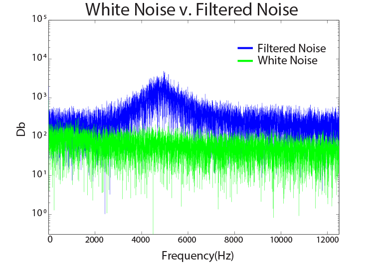

Modeling and Control
Modeling and Control, or ModCon, was my first circuits class. Since I've never really done this sort of thing before, I don't have a good comparison for it. I have a love/hate relationship with this class. When I get it, it's pretty magical, I feel brilliant. Other times I'm stuck in lab for hours, pulling at my hair because nothing works.Also it was super handwavey, I think I've said : "I don't understand it, but I'll accept it as truth," way too many times.
Labs
So the way ModCon worked was we had a lecture every Monday where everyone came out with varying levels of utter confusion, and then we would have a lab for the week. Each lab would introduce a new concept. And the order goes like this:Intro to circuits -> OpAmps -> Hysteretic Oscillators -> Filters -> Thermal systems -> Negative Resistance -> Hot Wire Anemometers -> Motor Characterization -> Feedback and Control Loops -> Inverted Pendulum.
This is lab 8 : Lab 8 Motor CharacterizationIt wouldn't be Olin if every class didn't have a final project...so without further ado...
Filtering White Noise

For my final project I made a band pass filter to filter the outputs of white noise which according to Wikipedia is "a random signal with a flat power spectral density," think static. The white noise is generated by pushing the transistors to their failing point which generates noise (surprise!).

I put buffers in my circuit so that I could plug speakers in without needing to worry about loading. Unfortunately the output was not enough to power my speakers so I couldn't actually hear anything. I didn't want to build an amplifier because they tend to get hot quickly which is annoying when I want to take measurements without burning an OpAmp.
Since I couldn't hear the output of the band pass it was important that I took measurements. I took the voltage coming out of the white noise and the band pass and ran an FFT on it. The resulting graph shows that my band pass amplifies 5000Hz and its surrounding frequencies.

For more detail, have a poster.